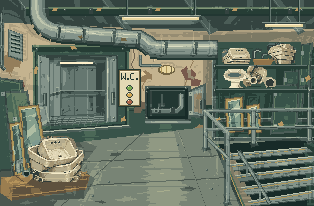
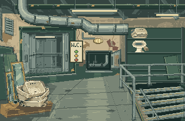
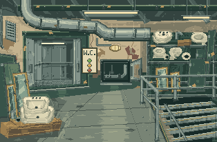
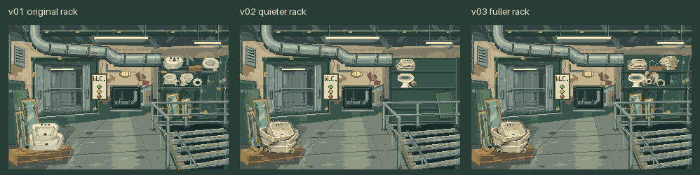
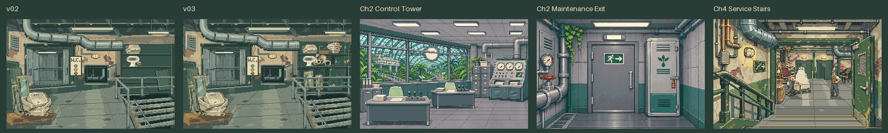
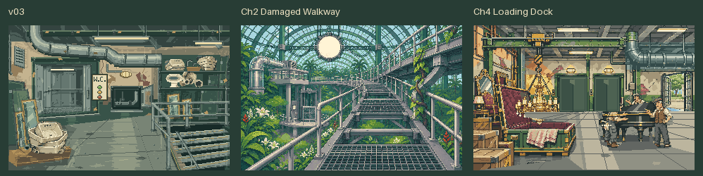
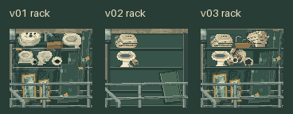
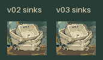
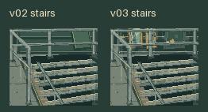

One UNSELECTED v03 candidatev03 candidateNative 1×Exact 4×PNG4× PNGv02 — preserved unchangedNative 1×Exact 4×PNG4× PNGv01 — original preservedNative 1×Exact 4×PNG4× PNGSHA-256 1030e04f9b32d2c0fc4394e9f00a4a70ba162db1c9eeed4f2772068cf9ce3207. 91.598% of full-scene pixels remain exact v02. Original stairs and rails are restored unchanged; no new perspective fix is claimed.
Native and exact4× comparison sheetsv01 / v02 / v03Native 1×Exact 4×PNG4× PNGQuick-glance full scenesNative 1×Exact 4×PNG4× PNGAdditional Chapter2/4 benchmarksNative 1×Exact 4×PNG4× PNGRack: before / afterNative 1×Exact 4×PNG4× PNGForeground: unchanged v02 / v03Native 1×Exact 4×PNG4× PNGStairs: original restored unchangedNative 1×Exact 4×PNG4× PNG
Actual approved referencesch2-control-towerNative 1×Exact 4×PNG4× PNGch2-damaged-walkwayNative 1×Exact 4×PNG4× PNGch2-maintenance-exitNative 1×Exact 4×PNG4× PNGch4-service-stairsNative 1×Exact 4×PNG4× PNGch4-loading-dockNative 1×Exact 4×PNG4× PNGch4-restroom-bowl-styleNative 1×Exact 4×PNG4× PNG